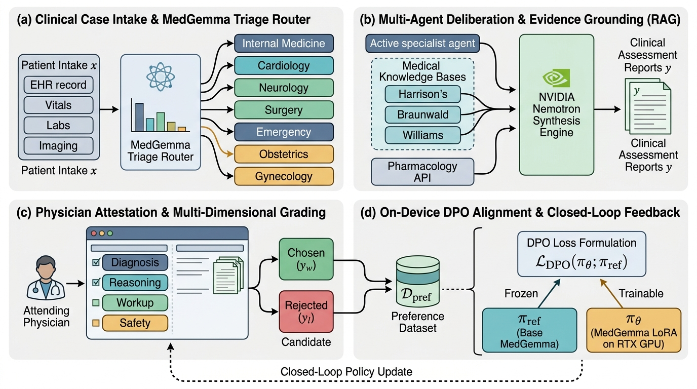

Encodes multi-modal inpatient admission telemetry $x$ including objective ESI acuity scores. Computes domain dispatch probabilities across 7 specialist agents, managing initial Ready state, standby partitioning, and dynamic handoff referrals.
Specialists ground clinical assertions in authoritative medical literature with verbatim chapter and page citations. The NVIDIA Nemotron-3-Nano-30B-A3B engine synthesizes differential diagnoses, diagnostic orders, and management plans.
Attending physicians conduct a single-click attestation or submit multi-dimensional clinical grades. Approved reports and clinician corrections are paired to form verified DPO preference triplets $(x, y_w, y_l)$.
Executes Direct Preference Optimization without external reward model instability, comparing $\pi_\theta$ against $\pi_{\text{ref}}$ on local RTX GPU infrastructure, benchmarked across 6 clinical axes.